3
Displaying DRC Errors in a Hierarchical Design
This chapter deals with Design Rule Checking (DRC) errors in the Dracula® graphical user interface and covers the following topics:
- “About Hierarchical DRC”
- “Starting DRC from the Graphical User Interface”
- “Selecting Hierarchical DRC Error Files”
- “Defining How To Display Hierarchical DRC Errors”
- “Selecting Hcells with Errors”
- “Displaying Hcell Errors”
- “Verifying DRC Rules”
- “Keeping Track of Errors You’ve Seen”
- “Displaying Hcell Masters”
- “Quitting the Tutorial”
- “Summary”
About Hierarchical DRC
When you run hierarchical DRC, Dracula creates error files for each of the design rule checks as for flat checking, but it reports them cell-by-cell for cell-based errors rather than flattening them. The cells are called Hcells, and error viewing needs to deal directly with this extra structure.
In this chapter, you’ll learn how to use the Dracula graphical user interface to display hierarchical Dracula data. You’ll use the graphical user interface commands to automatically locate and examine the error flags in these files, while the graphical user interface keeps track of which errors you’ve seen. You’ll also learn how to work with Hcells.
The procedures in this tutorial use Dracula output error files, not the original layout data. Because Dracula output data is in a different format, data you’ll see in this tutorial won’t look like your original layout data.
Starting DRC from the Graphical User Interface
Before you start this section, you need to create and open an empty cell, which is explained in the first chapter of this tutorial. If you have not yet started the graphical user interface software yet, read
After you open the empty cell, the graphical user interface window appears. The graphical user interface window and the Layer Selection Window (LSW) are the only two windows open. You can ignore the LSW for now.
Now you’ll tell the software where to find your Dracula error files.
-
To display the DRC commands, click left on the DRC menu.
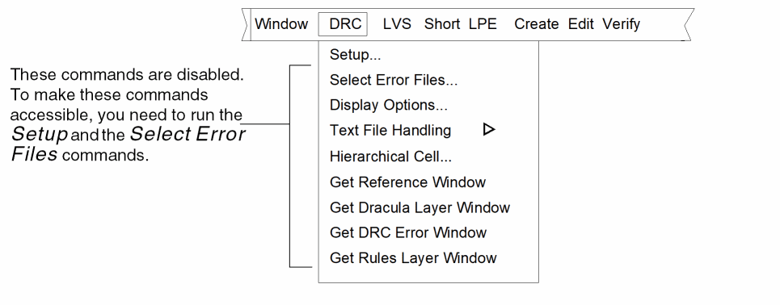 -
From the DRC menu, select Setup.
The DRC Setup form appears. -
To tell graphical user interface where to find your Dracula DRC files, in the Dracula Data Path field, type drchier.
If you did not start the software in the directory where the Dracula DRC files are located, you must type the complete path to the files.
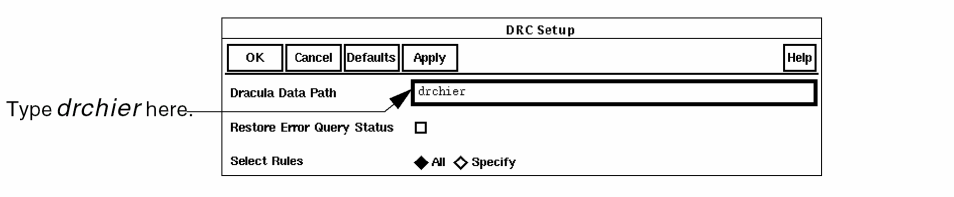 - Click left on OK.
Now the graphical user interface knows where to find your Dracula DRC error files.
The following windows appear. These windows are described in the section of the previous chapter.
You’ll use these windows later in this tutorial.
Next you’ll select the error files you want to display.
Selecting Hierarchical DRC Error Files
A Dracula run often generates several hierarchical DRC error files. To minimize the number of error flags in the graphical user interface window, you probably want to display only a few of the error files at once.
Next you’ll learn how to tell the graphical user interface which files to display. For this section, you’ll need to select the files with metal2-to-metal2 errors.
-
From the DRC menu, select Select Error Files.
The Select DRC Error Files form opens. - On the Select DRC Error Files form, select Show Rule/Comment.
-
Keep selected only the MT2MT206.DAT and MT2MT206.ENC error files.
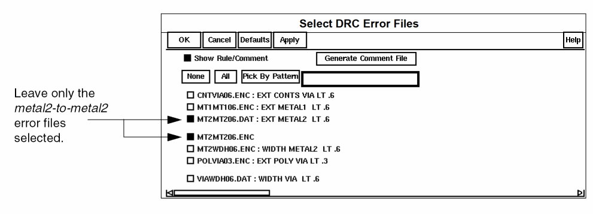 -
Click left on OK.
The Rules Layer Window contains only the error files you chose. The graphical user interface window shows the contact-to-via errors and metal1-to-metal1 errors.
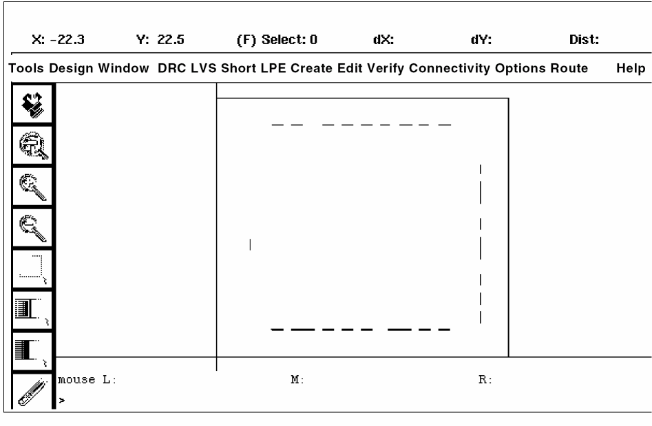Now that the graphical user interface knows which error files you want to examine, you’re ready to display the error flags.
Defining How To Display Hierarchical DRC Errors
To help you distinguish different types of errors, you set the way you want error flags to appear in the graphical user interface window. For this chapter, you’ll choose how you want the error flags to appear. You can leave the default settings if you want.
-
To change how the error flags are displayed, from the DRC menu, select Display Options.
The DRC Options form appears.
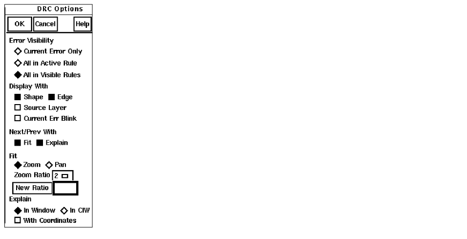The window is updated automatically when you select different options. -
Select All in Active Rule.
The graphical user interface window is updated to show the MT2MT206.DAT errors only because this is the active rule in the Rules Layer Window. -
Select All in Visible Rules.
The graphical user interface window is updated again to show all the MT2MT206.DAT and MT2MT206.ENC errors because these are all visible rules in the Rules Layer Window.
You’ve now defined how the MT2MT206.DAT and MT2MT206.ENC error flags appear. Next you’ll select an Hcell with errors.
Selecting Hcells with Errors
Before you can see the hierarchical DRC errors in the CNTVIA06.ENC file, you need to select the Hcell in which the errors occur.
- From the DRC menu, use Select Error Files to add the CNTVIA06.ENC error file to the Rules Layer Window.
- In the Rules Layer Window, click on CNTVIA06.ENC.
-
From the DRC menu, select Hierarchical Cell.
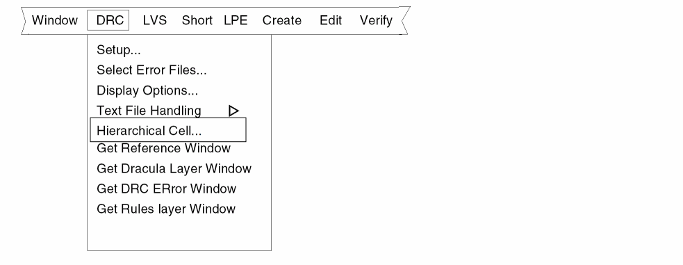The Handle Hcells form appears. For this tutorial, you’ll select the A0121_B Hcell. -
Fill out the Handle Hcells form as shown.
The graphical user interface window is updated automatically when you select these options.
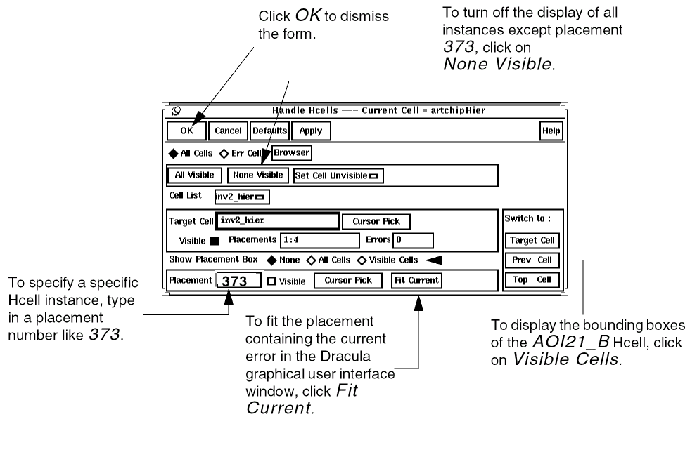The graphical user interface window is updated to show placement 373 of the AOI21_B Hcell only.
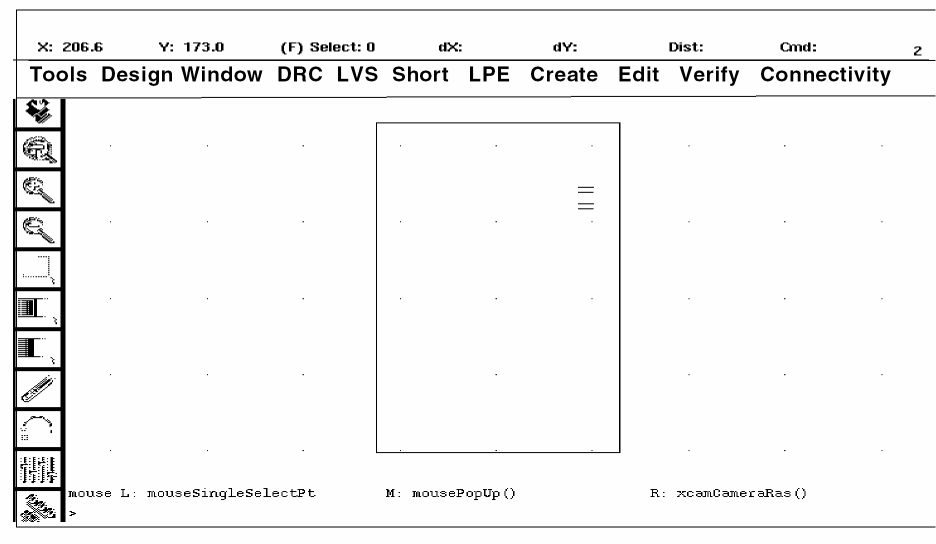Next you’ll display the error flags in the Hcell you selected.
Displaying Hcell Errors
You can now display the contact-to-via error flags in the AOI21_B Hcell. You’ll zoom in to the errors in that Hcell.
-
From the View DRC Error window, click left on Next.
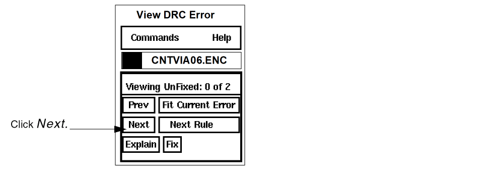The graphical user interface window zooms to the first error in the current Hcell.
The View DRC Error window is updated to show that you are viewing the first of four unfixed errors.
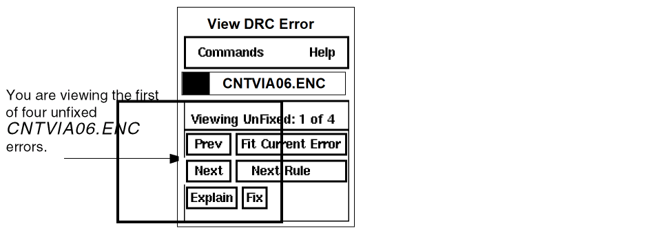A window explaining the error opens at the top of your screen. You’ll use it later in this tutorial. -
To display the Dracula layers associated with the Hcell error flags, from the DRC Options form, select Source Layer.
The graphical user interface window is updated automatically to show the source layers for the first error.
Notice that the DLW highlights source layers displayed in the graphical user interface window.
Verifying DRC Rules
Now that the error flags are displayed, you can identify the rule that caused these DRC flags.
The text window at the top of your screen gives an explanation of the DRC error you selected in the AOI21_B Hcell.
To verify that the error explanation reflects the problem in the design, you’ll measure the space between the contact and via Dracula layers.
-
Click left on the ruler at the bottom of the icon menu on the left of the graphical user interface window.
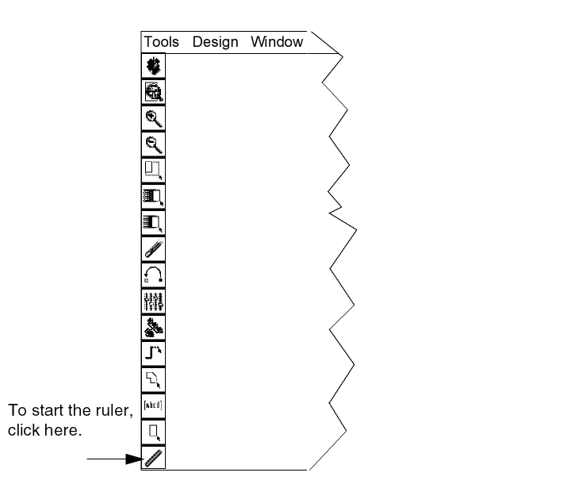 -
Measure the distance between the edges of the shapes on each layer as shown in the graphic below.
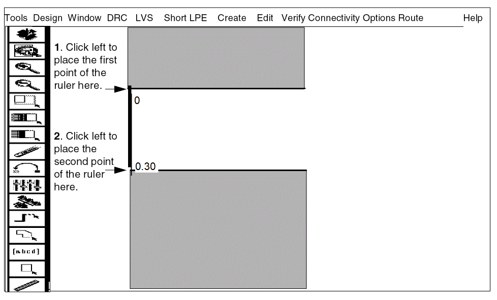You see that this spacing is less than the required 0.6 microns. - To remove the ruler, select Window > Clear All Rulers.
-
From the View DRC Error window, select Next.
The graphical user interface window zooms in to the next error in the current Hcell. Notice that the View DRC Error form shows that you are now viewing the second of four unfixed CNTVIA06.ENC errors.
Next you’ll learn how to keep track of the errors you’ve seen.
Keeping Track of Errors You’ve Seen
To keep track of all the errors that resulted from your hierarchical DRC run, you use the error status report. This report is a text file that provides information about all the errors that resulted from your hierarchical DRC run.
-
To display the error status report, from the View DRC Error window, select Commands – Error Status.
The DRC Error Query Status form appears.
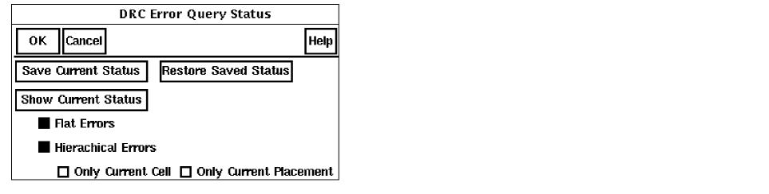
-
To display the status report, click left on Show Current Status.
The status text window appears.
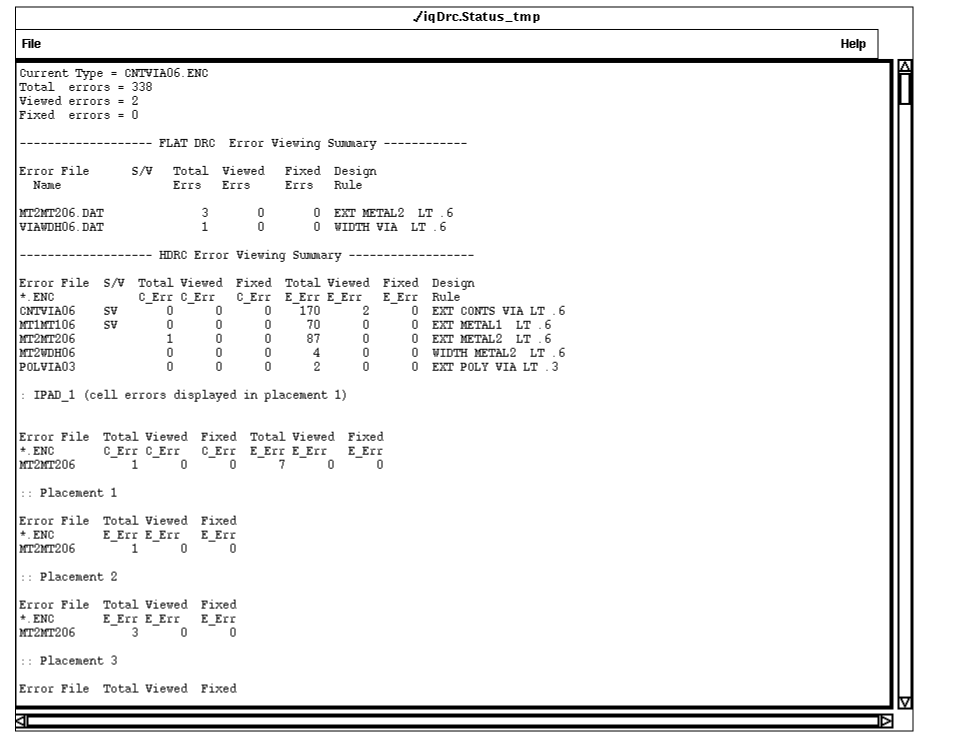
Now that you have seen the error status report containing information about all errors resulting from your hierarchical DRC run, you can close this text window.
Displaying Hcell Masters
When you display Hcells, the graphical user interface window can get cluttered, which makes it hard to see individual Hcells. To reduce the amount of data in the graphical user interface window, you can display the Hcell masters only. When there is less data in the graphical user interface window, you can locate and evaluate errors faster.
- From the DRC menu, select Hierarchical Cell.
-
From the Handle Hcells form, click the Target Cell button as shown below.
The Handle Hcells form has all options you specified earlier in this chapter.
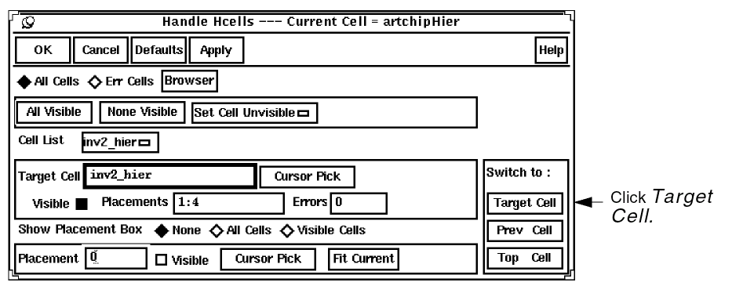The graphical user interface window is redrawn to show the via and contact Dracula layers in the context of the INV cell rather than the whole chip.
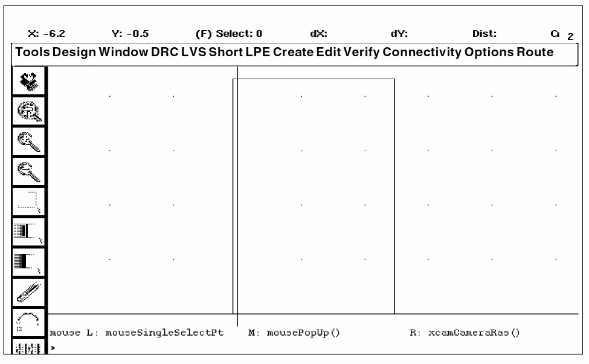
Quitting the Tutorial
If you’d like to continue, you can leave the windows you used for the tutorial on the screen, or you can close them. To close the windows, go to the
When you are ready to quit the Cadence software, go to the
Summary
In this chapter, you learned how to use graphical user interface to identify and display DRC errors in a hierarchical design. Specifically, you learned to
- Start DRC from the graphical user interface
- Select hierarchical DRC error files
- Define how to display hierarchical DRC errors
- Select Hcells with errors
- Display Hcell errors
- Verify DRC rules
- Keep track of errors you’ve seen
- Display Hcell masters
- Quit the tutorial
Return to top